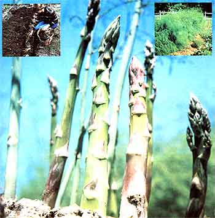

INSET, LEFT: Asparagus roots are planted in clusters about a foot apart. INSET, RIGHT: Feathery foliage appears once the firstyear plants go to seed, but harvesting doesn't begin until the second season. BELOW: The sweet, tender spears of Asparagus officinalis.